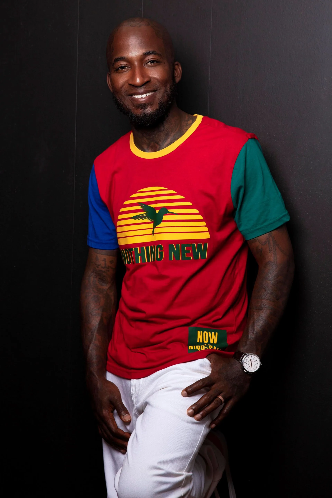

Built through craft and perseverance.
In 2006, I decided to attend Rivertown School of Beauty to work towards becoming a Master Barber. In 2007, I graduated and obtained my Master Barber license. I started my career at OJ’s Barber Shop for two years under Ms. Olivia Jordan. This shop is where I learned my work ethic for the barber industry.
I then worked for one year at G-Styles under Mario Gardner, where I learned many traditional barbering skills. My next stop was Diamond Kutz, working under Edward Powell and Vernon Jackson. During eight years there, I began to understand the freedom of entrepreneurship in the hair industry.
Building what I have now has been challenging, but rewarding. A great team that respects your vision is essential. I hope my story encourages others who want to step out on faith with the career they desire. Trust your work ethic, add your touch, and remember: no one will go harder for you than you.